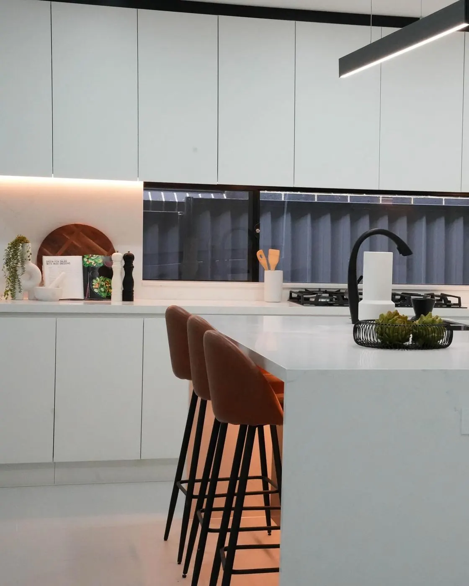

Kitchen styles
Modern kitchens in Sydney.
Clean lines, no visible handles and a stone island that steals the show. Our modern kitchens are made to measure in gloss or matt finishes.
- Free 3D designer
- Made in our Chipping Norton workshop
- Lifetime workmanship guarantee
The look
What makes a modern kitchen.
A modern kitchen is all about clean, unbroken lines. Doors open with a fingerpull edge or push-to-open hardware, so there are no handles to break up the look.
Gloss polyurethane reflects light and suits smaller rooms. Matt finishes feel softer and hide fingerprints better. A waterfall island, where the stone runs down the sides to the floor, is the signature piece.
Key features
- Fingerpull or push-to-open doors
- Gloss or matt polyurethane, or board
- Waterfall stone island
- Stone or glass splashback
- Integrated fridge and dishwasher panels
- Floor-to-ceiling cabinets and bulkheads
- LED strip lighting under overheads
Our work
Modern kitchens and joinery we’ve built.


See more projects across Sydney
See this look on your own layout.
Our 3D designer opens with a modern kitchen already set up. Change the shape, sizes and colours to suit your room.
Other kitchen styles: Hamptons · Shaker · Two-tone · Timber-look
FAQ
Good questions.
Do handleless kitchens work for everyday use?
Yes. Fingerpull edges give you a natural grip on every door and drawer, and push-to-open drawers from Blum are easy with full hands. We help you choose which suits each cupboard.
Is gloss or matt better?
Gloss is brighter and makes a small kitchen feel bigger, but shows fingerprints. Matt is softer, more forgiving and on trend. Both are wipe-clean polyurethane.
Love the modern look?
Free measure, 3D design and quote. See door and stone samples at our Chipping Norton showroom.